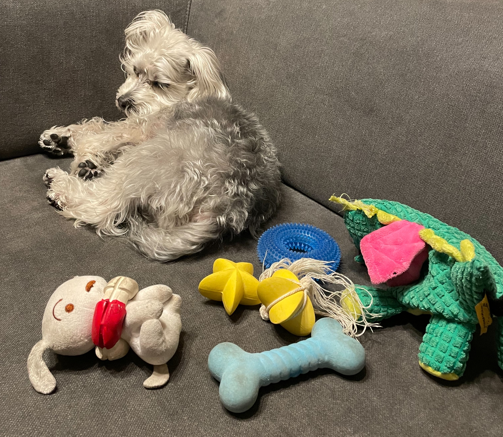

About Page
Recently, his absolute favorite is a dinosaur plushie that came all the way from Los Angeles as a special souvenir. He carries it around everywhere, showing it off like a prized possession.
Another toy that holds a special place in FUU’s heart is "Shiro," the adorable dog character from Crayon Shin-chan. Shiro was a lucky prize his big sister won at a UFO catcher (claw machine), and ever since, FUU has treated it like a true treasure. He loves to grab Shiro—or any toy, really—by the ears or tail, shake it with all his might, and send it flying across the room. It’s one of his favorite games, and watching him play never fails to make us smile. Sometimes, FUU gets so excited that his toys fly onto unexpected places—like the dining table! It’s not uncommon for us to be sharing a meal when, out of nowhere, a toy lands among the dishes. We’ve learned to keep an eye out during mealtimes, because you never know when a "flying dinosaur" might make a surprise appearance! With his powerful throws and endless energy, we’re convinced that if there were a toy-throwing championship, FUU would easily win first place. Every day with him is full of laughter, little surprises, and heartwarming moments—and we wouldn't have it any other way.